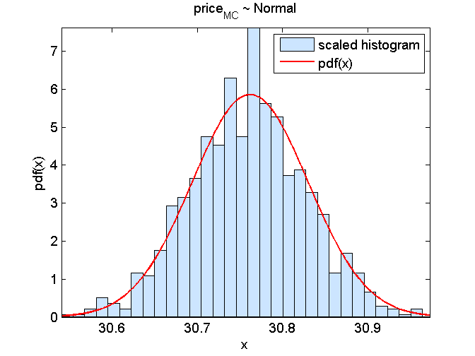

Contents
function demo_priceEuropeanCallMC_stratifiedSampling
format short
Parameters of the European call option
S0 = 100;
K = 90;
r = 0.05;
T = 2;
sigma = 0.4;
MC estimate with M trajectories
M = 1e5;
Standard MC
[price_MC,stdev_MC] = priceEuropeanCallMC(S0,K,r,T,sigma,M)
price_MC =
30.5486
stdev_MC =
0.1637
MC + stratified sampling
nStrata = 10;
M = round(M/nStrata);
[price_MC_stratifiedSampling,stdev_MC_stratifiedSampling] = priceEuropeanCallMC_stratifiedSampling(S0,K,r,T,sigma,M,nStrata)
price_MC_stratifiedSampling =
30.8210
stdev_MC_stratifiedSampling =
0.0681
Exact price
price_exact = priceEuropeanCall(S0,K,r,T,sigma)
price_exact =
30.7619
batch MC (B repetitions)
B = 1000;
for b = 1:B
price_MC_stratifiedSampling(b) = priceEuropeanCallMC_stratifiedSampling(S0,K,r,T,sigma,M,nStrata);
end
Check that the MC estimates have the predicted mean and stdev
mu = mean(price_MC_stratifiedSampling)
sigma = std(price_MC_stratifiedSampling)
mu =
30.7590
sigma =
0.0676
Check that the price estimates follow a Gaussian
figure(1); clf,
modelPdf = @(price)(normpdf(price,price_exact,stdev_MC_stratifiedSampling));
graphicalComparisonPdf(price_MC_stratifiedSampling,modelPdf)
title('price_{MC} ~ Normal')
